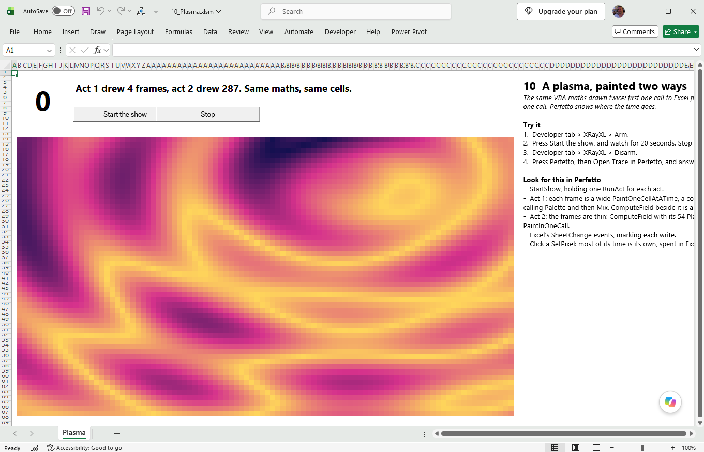
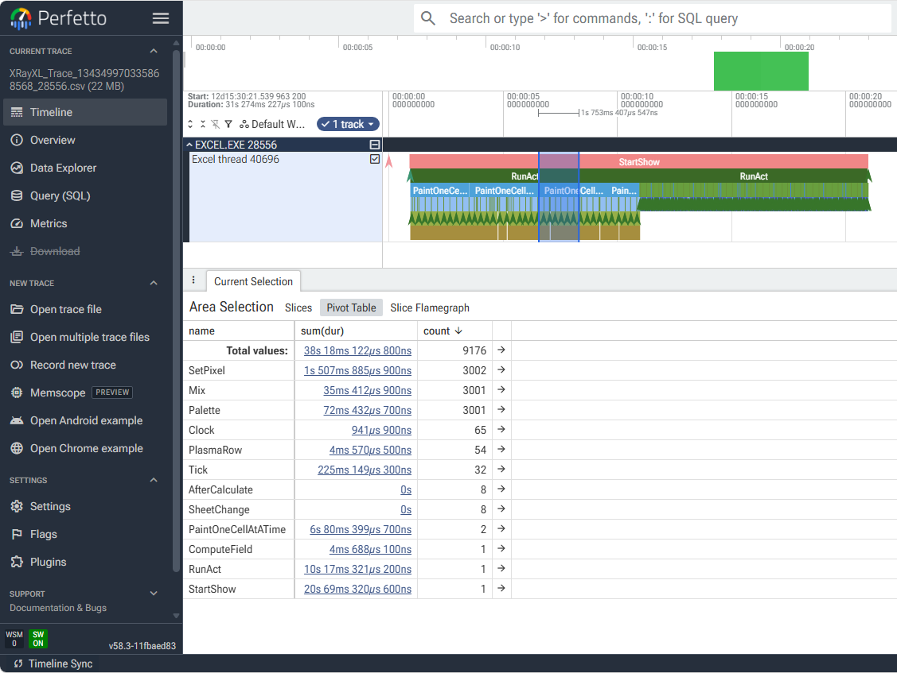

The real sequence
Every entry and exit in the order Excel actually ran them — not the order the sheet is laid out in, and not the order you assumed.
When a spreadsheet is slow, freezes, or crashes, XRayXL tells you which XLL add-in and VBA functions actually ran — in what order, on which thread, triggered by which cell or button, with what arguments, returning what, how long each took, which functions threw errors and which handled them.
It changes nothing about your workbook: no cells touched, no macros added, no VBA source read. You arm it, recalculate or run your macros, then read what really happened — as a file, or on a timeline in your browser.
Four cells, in the order Excel calculated them rather than the order they sit on the sheet. A3 calls VbaOuter, which calls an add-in function through Application.Run; then A4, A2 and A1.
| seq | kind | source | module | function | caller | callerref | args | ret | outcome | ticks |
|---|---|---|---|---|---|---|---|---|---|---|
| 1 | entry | VBA | [OneTimeline_8276.xlsm]Probe | VbaOuter | cell | [OneTimeline_8276.xlsm]Sheet1!A3 | a1:Double=3 | |||
| 2 | entry | XLL | TracedAddin64.xll | TxE | cell | [OneTimeline_8276.xlsm]Sheet1!A3 | a1:E=3 | |||
| 3 | exit | XLL | TracedAddin64.xll | TxE | 3 | returned | 272 | |||
| 4 | exit | VBA | [OneTimeline_8276.xlsm]Probe | VbaOuter | 4 | returned | 4096 | |||
| 5 | entry | XLL | TracedAddin64.xll | TxE | cell | [OneTimeline_8276.xlsm]Sheet1!A4 | a1:E=4.5 | |||
| 6 | exit | XLL | TracedAddin64.xll | TxE | 4.5 | returned | 216 | |||
| 7 | entry | VBA | [OneTimeline_8276.xlsm]Probe | VbaPlain | cell | [OneTimeline_8276.xlsm]Sheet1!A2 | a1:Double=2 | |||
| 8 | exit | VBA | [OneTimeline_8276.xlsm]Probe | VbaPlain | 6 | returned | 410 | |||
| 9 | entry | XLL | TracedAddin64.xll | TxE | cell | [OneTimeline_8276.xlsm]Sheet1!A1 | a1:E=1.5 | |||
| 10 | exit | XLL | TracedAddin64.xll | TxE | 1.5 | returned | 167 |
Abridged for width. The file is a plain CSV of 23 columns, or JSON Lines if you ask for it, and also carries input, span, parent, depth, thread, qpc, proc, typetext, argcount, rettype, tracerticks and trust.
Read row 1 as: the VBA function VbaOuter, in module Probe of OneTimeline_8276.xlsm, called from Sheet1!A3, declared Double, given 3. The callerref is the same address Excel's own Range.Address(,,,True) gives — paste it straight back into a formula.
Row 4 closes it: returned 4 after 4096 ticks, 1151 of them the tracer's own (tracerticks), so the function itself took 2945.
Every entry and exit in the order Excel actually ran them — not the order the sheet is laid out in, and not the order you assumed.
The cell, button or event that started the chain, as a reference you can paste back into a formula. Multi-threaded recalculation is recorded per thread.
What went in and what came back, with their types — so a wrong answer leads to the call that produced it, not just the cell showing it.
Ticks from a high-resolution counter on every exit, and how many of them were the tracer's own. Nested and recursive calls each carry their own, so the expensive one is the one that reads expensive.
A per-thread shadow stack supplies depth and parent, so a flat file reconstructs into a call tree.
Which procedure raised, which ones the error passed through, and which one finally caught it.
It follows XLL add-in and VBA code — macros, buttons and event handlers included — not Excel's own built-in functions, COM or RTD add-ins, or JavaScript custom functions.
After Disarm, the Perfetto button opens the trace in Perfetto UI, an open-source trace viewer, in your browser. Each thread is a track, each call a slice nested under the call that made it, and Excel's events are markers. Click a slice for its arguments, its result, how long it took and how much of that was XRayXL's own.


The trace is converted on your machine, by a page that ships beside the add-in, so nothing is uploaded.
XRayXL hooks into Excel's internals. It patches a live Excel process, using details Microsoft can change in any update. It runs on 64-bit Excel only, antivirus and EDR may well notice it, and the trace file holds your workbook's data in the clear. Read the caveats before running it, especially on a machine someone else manages.
Everything that comes with XRayXL, to read before you download anything.
What XRayXL records and how, a real trace read row by row, getting it into Excel, the Diagnostics window, and the caveats in full.
Read → guided tourTen demo workbooks, a feature at a time — values, callers, errors, a real VBA model, objects, the call tree, threads, an XLL option book and the plasma — with rows from a real run.
Read → settingsEvery capture setting: what it costs, when it can change, and how to drive it from VBA. And the add-in's own log.
Read → referenceThe trace file's contract, column by column: kinds, spans and depth, the value grammar, objects, quoting, and what a reader may rely on.
Read → errorsEach outcome in a real chain, VBA's error dialog, and the cases where VBA or Excel handle an error in a way you might not expect.
Read → internalsHow the VBA tracer works, built up in layers for a programmer who has not spent time inside interpreters: what is patched, the shadow stack, return values and error outcomes.
Read →